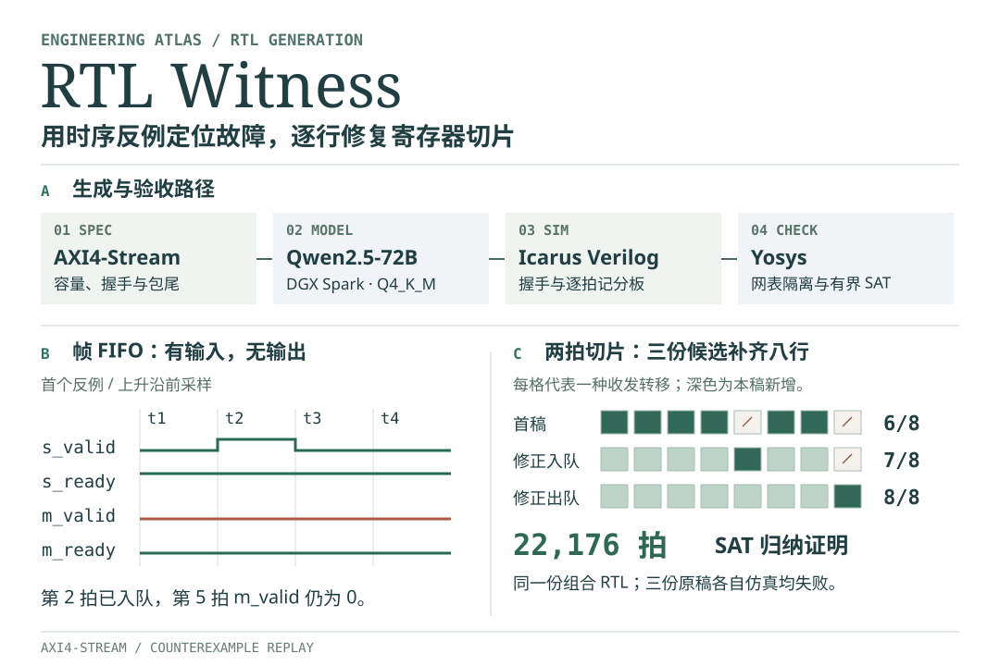

工程图志 10 / AI for RTL
RTL Witness
在 DGX Spark 上让模型读接口规格、写 Verilog、根据逐拍反例修订。用 Icarus 核对每拍传输，用 Yosys 检查综合网表。
GitHub 仓库 ↗

模型写状态转移，工具验每一行
6 → 7 → 8
- 电路
- 两拍 AXI-Stream 寄存器切片。工具提供接口和寄存器；模型决定每次收发之后，队列有多深、队首和队尾各存什么。
- 同种子对照
- 三个相同的生成种子下，Coder-32B 分别用 1、1、3 次请求写对八种转移；72B 都用 3 次，覆盖从 6 行进到 7 行、再到 8 行。
- 验收
- 总共得到两份不同的 RTL，只在一个已无效的队尾寄存器上写入不同值。两份均通过独立回放、端口隔离和复位后的队列归纳证明。
- 同资源下的优化
- 两份电路均用 68 FF、38 LUT。让无效队尾保持原值，两组突发背压流量下，队尾寄存器翻转分别少了 25.4% 和 39.1%。查看逐拍统计 ↗
同一拍发出 A、接收 B，下一拍该输出谁？
4,224 拍独立回放
队列里原本只有 A。72B 首稿发出 A 时把 B 写到队尾，下一拍却报告无有效数据。工具改用原稿中写队首的赋值。修复后，握手信号、有效数据与包尾均通过与参考队列的无界等价检查。
对照第 15 拍反例与修复后的电路 ↗数据离开 RAM，就算离开 FIFO 吗？
512 字 FIFO 容量
Coder-32B 把预取当成减计数，但预取的字还在输出寄存器里。工具保留这条计数规则，根据九个状态反例重写预取、背压与有效位控制。修复后的 FIFO 通过 20,232 拍独立回放；归纳证明验证了任意入队字的数据、包尾和出队顺序。
查看三条控制方程与队列证明 ↗发出最后一个字节的同时，能接收下一字吗？
72B 写的 32→8 位转换器修正位选语法后，在第 5 拍仍拒收下一字。工具保留数据通路，用四条失败轨迹把 116 个局部改法筛到 2 个。按预定顺序选中的电路通过 6,524 拍独立回放；即使让网表里八个未定义位每拍任意变化，它仍满足全部八项端口安全性质。
看四轮筛选、冻结的 RTL 与逐位证明 ↗32B 权重微调
先训练输出层：六份首稿的逐拍验收从 4/6 到 5/6，加入同步复位检查后均为 0/6。
再用 24 个电路微调最后 8 层注意力。DGX Spark 完成 48 步 LoRA 训练，16 个 Q/V 投影均有可复核的权重更新。五类工程的完整首稿通过率另行评测。
下载 32B 适配器与训练记录 ↗给模型看哪一拍出了错？
9 位最低置位提取器使能写入零时，输出仍停在 1。只告诉 32B“验证未通过”，同步、异步两份重写都没能编译；给出这一拍的输入和期望值，模型自行修好了两份。每份在 RTL 和综合网表上各通过 10,240 种单步转移，全程未改模型权重。
对照两份父稿的四次模型修复 ↗